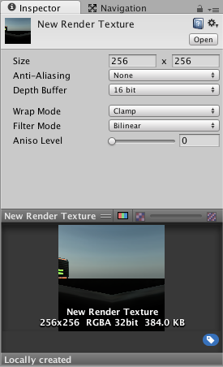

Render Texture
Render Textures are special types of Textures that are created and updated at runtime. To use them, you first create a new Render Texture and designate one of your Cameras to render into it. Then you can use the Render Texture in a Material just like a regular Texture. The Water prefabs in Unity Standard Assets are an example of real-world use of Render Textures for making real-time reflections and refractions.
Properties
The Render Texture Inspector is different from most Inspectors, but very similar to the Texture Inspector.

The Render Texture inspector displays the current contents of Render Texture in realtime and can be an invaluable debugging tool for effects that use render textures.
| Property: | Function: | |
|---|---|---|
| Dimension | The dimensionality (type) of the render texture. | |
| 2D | The render texture is two-dimensional. | |
| Cube | The render texture is a cube map. | |
| 3D | The render texture is three-dimensional. | |
| Size | The size of the render texture in pixels. You can only enter power-of-two values, such as 128 and 256. | |
| Anti-Aliasing | The number of anti-aliasing samples. You can select None, 2 samples, 4 samples, or 8 samples. If you select None, Unity does not apply anti-aliasing. | |
| Color Format | The color format of the render texture. | |
| Depth Buffer | The format of the depth buffer. You can select No depth buffer, At least 16 bits depth (no stencil), or At least 24 bits depth (with stencil). The stencil buffer is a general purpose buffer that allows you to store an additional unsigned 8-bit integer (0–255) for each pixel drawn to the screen. | |
| sRGB (Color RenderTexture) | Check this box to make the render texture use sRGB read/write conversions. | |
| Enable Mip Maps | Check this box to make the render texture generate mipmaps. | |
| Auto generate Mip Maps | Check this box to automatically fill the generated mipmaps with relevant data. If you don’t enable this, you'll have to use the GenerateMips function to fill those mipmaps manually. Alternatively, choose which mip to render into when you call the various SetRenderTarget functions. For more information about the SetRenderTarget functions, see Graphics.SetRenderTarget and Rendering.CommandBuffer.SetRenderTarget. |
|
| Dynamic Scaling | Check this box to let dynamic resolution scaling resize the render texture. If you don’t enable this, the render texture maintains the same size regardless of the Dynamic Resolution setting. | |
| Wrap Mode | Controls how the texture is wrapped: | |
| Repeat | Tiles the texture to create a repeating pattern. | |
| Clamp | Stretches the edges of the texture. This is useful for preventing wrapping artifacts when you map an image onto an object and you don't want the texture to tile. | |
| Mirror | Tiles the texture to create a repeating pattern that mirrors the texture at every integer boundary. | |
| Mirror Once | Mirrors the texture once, and then falls back to clamping. | |
| Per-axis | Lets you set different wrap modes for the U axis and the V axis. The available options are also Repeat, Clamp, Mirror and Mirror Once. For example, when you use latitude-longitude environment maps for reflection probes, it is useful to have Clamp on the vertical coordinate (V axis), but Repeat on the horizontal coordinate (U axis). | |
| Filter Mode | Controls how the sampling of the texture uses nearby pixels. The options are: | |
| Point | Uses the nearest pixel. This makes the texture appear pixelated. | |
| Bilinear | Uses a weighted average of the four nearest texels. This makes the texture appear blurry when you magnify it. | |
| Trilinear | Uses a weighted average of the two nearest mips, which are bilinearly filtered. This creates a soft transition between mips, at the cost of a slightly more blurry appearance. | |
| Aniso Level | Anisotropic filtering level of the texture. This increases texture quality when you view the texture at a steep angle. Good for floor, ground, or road textures. |
Example
A very quick way to make a live arena-camera in your game:
- Create a new Render Texture asset using Assets >Create >Render Texture.
- Create a new Camera using GameObject > Camera.
- Assign the Render Texture to the Target Texture of the new Camera.
- Create a wide, tall and thin box
- Drag the Render Texture onto it to create a Material that uses the render texture.
- Enter Play Mode, and observe that the box's texture is updated in real-time based on the new Camera's output.